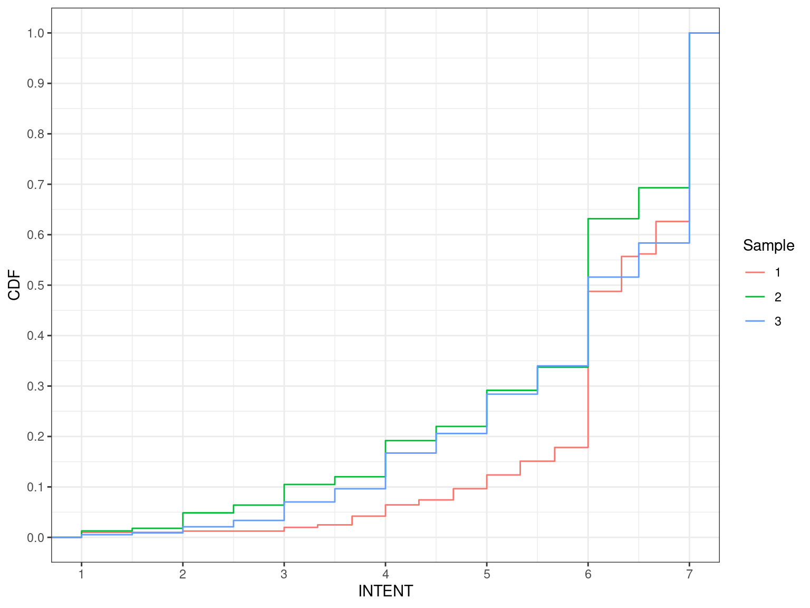
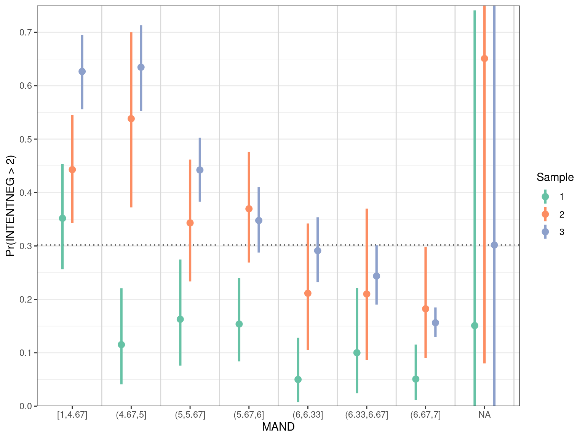
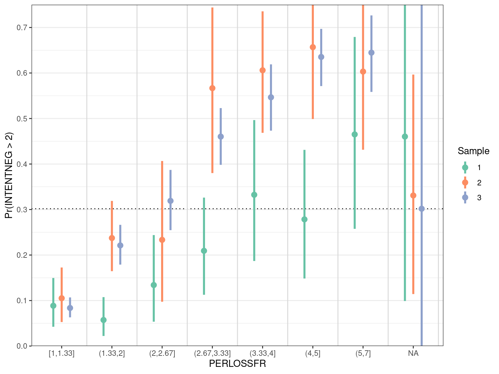

| INTENTNEG | Sample 1 | Sample 2 | Sample 3 |
|---|---|---|---|
| 1.00 | 214 | 139 | 841 |
| 1.33 | 22 | 0 | 0 |
| 1.50 | 0 | 26 | 127 |
| 1.67 | 14 | 0 | 0 |
| 2.00 | 90 | 91 | 324 |
| 2.33 | 6 | 0 | 0 |
| 2.50 | 0 | 12 | 68 |
| 2.67 | 4 | 0 | 0 |
| 3.00 | 17 | 20 | 129 |
| 3.33 | 2 | 0 | 0 |
| 3.50 | 0 | 7 | 81 |
| 3.67 | 4 | 0 | 0 |
| 4.00 | 13 | 31 | 102 |
| 4.33 | 7 | 0 | 0 |
| 4.50 | 0 | 8 | 60 |
| 4.67 | 4 | 0 | 0 |
| 5.00 | 3 | 24 | 95 |
| 5.50 | 1 | 7 | 40 |
| 6.00 | 1 | 21 | 29 |
| 6.33 | 1 | 0 | 0 |
| 6.50 | 0 | 0 | 5 |
| 7.00 | 1 | 5 | 8 |
| 3 | 9 | 0 |
Predicting insider behaviors
Version 2: LLMs
1 Outcome Variables
There are several potential outcome variables.
INTENTNEG(and duplicate column namedNTENTNEG)intentNegGis 1 ifINTENTNEG\(\geq\) 2 forSample= 1, is 1 ifINTENTNEG\(>\) 2 forSample= (2,3), and 0 otherwise.INTENTIntentGis 1 ifINTENT\(\geq\) 6 forSample= 1, is 1 ifINTENT\(>\) 6 forSample= (2,3), and 0 otherwise.OverallGis takes values in {0,1,2,3} depending on the values ofintentNegGandIntentG.
For the original analysis, we looked at INTENTNEG and intentNegG. I’m not sure why there is a different threshold for intentNegG over the different Samples? In the analysis below, I’m using INTENTNEG > 2 regardless of the sample.
1.1 INTENTNEG
Cumulative Distribution Plot
1.2 INTENT
| INTENT | Sample 1 | Sample 2 | Sample 3 |
|---|---|---|---|
| 1.00 | 4 | 5 | 10 |
| 1.50 | 0 | 2 | 7 |
| 2.00 | 1 | 12 | 23 |
| 2.50 | 0 | 6 | 24 |
| 3.00 | 3 | 16 | 70 |
| 3.33 | 2 | 0 | 0 |
| 3.50 | 0 | 6 | 50 |
| 3.67 | 7 | 0 | 0 |
| 4.00 | 9 | 28 | 135 |
| 4.33 | 4 | 0 | 0 |
| 4.50 | 0 | 11 | 74 |
| 4.67 | 9 | 0 | 0 |
| 5.00 | 11 | 28 | 149 |
| 5.33 | 11 | 0 | 0 |
| 5.50 | 0 | 18 | 107 |
| 5.67 | 11 | 0 | 0 |
| 6.00 | 125 | 115 | 336 |
| 6.33 | 28 | 0 | 0 |
| 6.50 | 2 | 24 | 129 |
| 6.67 | 26 | 0 | 0 |
| 7.00 | 151 | 120 | 795 |
| 3 | 9 | 0 |
Cumulative Distribution Plot

2 Predictor Variable Changes
This data is missing: Employmnt, JobType, JobTitle.
3 Exploratory Plots
These exploratory plots show the univariate relationship between a predictor variable and the binary outcome INTENTNEG > 2 for each Sample. The x-axis (predictor variable) is binned into up to 10 bins and the y-axis gives the point estimate and 95% credible interval for the probability that INTENTNEG is greater than 2. The horizontal dashed line is the overall proportion of respondents with INTENTNEG greater than 2.
These plots are designed to show two main things:
- The association of the predictor variable values and outcome.
- The differences of outcomes over
Sample.
4 Rational Choice Theory
The 7 variables in Rational Choice are: REWARD, INTBEN, BENEFITS, COSTS, BENEFITSNON, COSTSNON, INTCOST.
5 Theory of Planned Behavior
The 5 variables in Theory of Planned Behavior are: MAND, ATT, ATTNEG, SNORM, DNORM.

6 Psychological Reactance Theory
The 3 variables in Psychological Reactance Theory are: DANG, REACTP, PERLOSSFR.

7 Deterrence Theory
The 3 variables in Deterrence Theory are: SEVERITY, CERTAINTY, CELERITY.
8 Cultural Factors
The 4 variables in Cultural Factors are: PD, COID, UA, MF.
9 Demographic Predictors
Note: this data set is missing Employmnt, JobType, JobTitle, which were included in the previous analysis.
The 13 variables in Demographic Predictors are: Educ, Age, Gender, WExp, OrgExp, CompExp, IntExp, OrgSize, Industry, InfoInt, ITJob, CompUsage_1, ComProf.

10 Other Predictors
The 14 variables in Other Predictors are: ORGCOM, LEGIT, VALCONG, APATHY, SETA, RAVL, IC, TMC, SPEC, EVAL, GSECAWR, ISPAWR, SAFETYEFF, MORAL.
11 Protection Motivation Theory (Ignored)
Note: we didn’t include PMT variables in the initial analysis.
The 10 variables in Protection Motivation Theory are: SEVTHRT, THRTVUL, INTMALREW, EXTMALREW, RESPEFF, SELFEFF, IMPED, FEARE, FEARP, FEARC.
12 Non-used variables
We excluded these variables from the original analysis
The 3 variables in Excluded are: LSC, AVOID, REACTANCE.